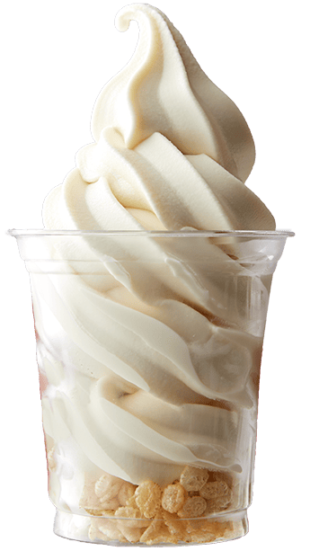
Large
純豆乳ソフト（大サイズ）
¥690
Full-size swirl. Creamy and smooth with no grassy soy aftertaste.
 Soybeans
Soybeans- Nut-free base recipe*
Dairy-free morning soy milk soft serve, organic coffee float & 7 plant-based cafe drinks.

純豆乳ソフト（大サイズ）
¥690
Full-size swirl. Creamy and smooth with no grassy soy aftertaste.
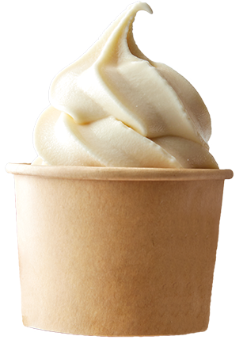
純豆乳ソフト（中サイズ）
¥460
Half size — great for kids or alongside a donut or dorayaki.
Made from additive-free morning soy milk processed within 48 hours of pressing — so guests with dairy allergies or lactose intolerance can enjoy real soft serve.
Every Pure Soy Soft Serve (Large or Medium) comes with our 5 Japanese toppings. Try kinako with kuromitsu for a classic Japanese combo! *Kinako contains soybeans.
 Matcha抹茶
Matcha抹茶 Kinakoきな粉roasted soybean flour
Kinakoきな粉roasted soybean flour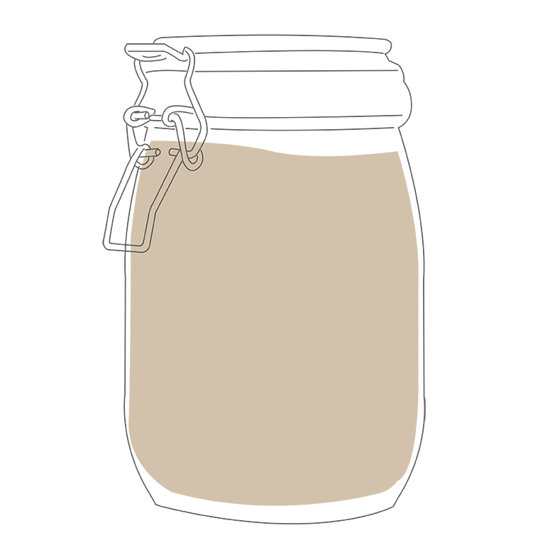
Hojichaほうじ茶roasted green tea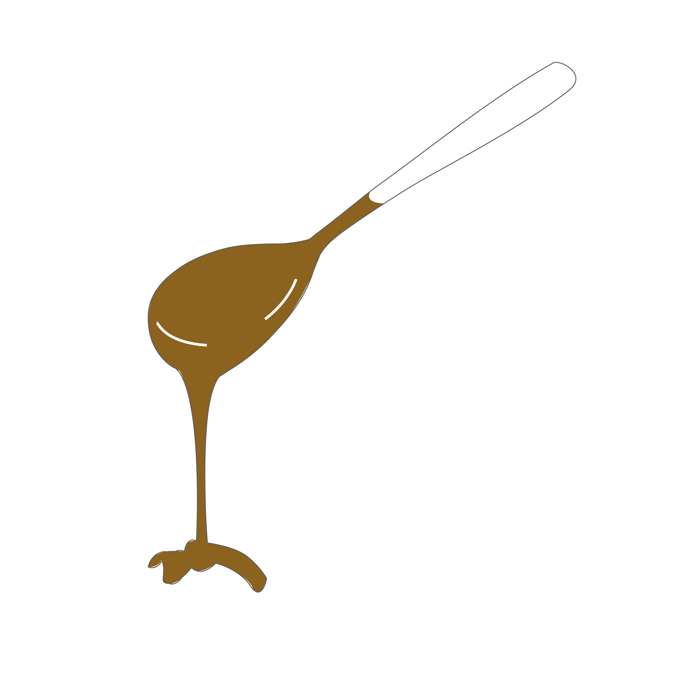
Chocolate sauceチョコソース Kuromitsu黒蜜black sugar syrup
Kuromitsu黒蜜black sugar syrup
コーヒーフロート
Aromatic iced organic coffee crowned with a generous swirl of our morning-squeezed pure soy milk soft serve. Crisp, bittersweet coffee meets velvety plant-based creaminess.
Iced ¥660
Order any waffle, soft serve, donut, dorayaki, or gelato and add any cafe drink below for ¥330 (スイーツとセットでドリンク全品330円 — save up to ¥60).
Single ¥360–¥390 · Set ¥330
カフェドリンク（全7種）
100% dairy-free & vegan drinks crafted with organic coffee, rich soy milk, Japanese koji rice amazake, and fruit infusions. 4 drinks are completely soy- & nut-free.
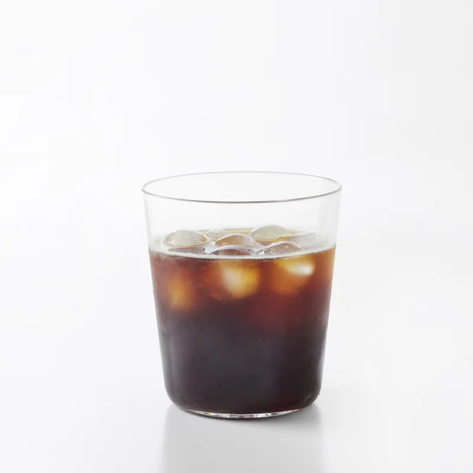
オーガニックコーヒー（HOT / COLD）
¥360 · Set ¥330
Clean, aromatic organic roast served hot or iced.
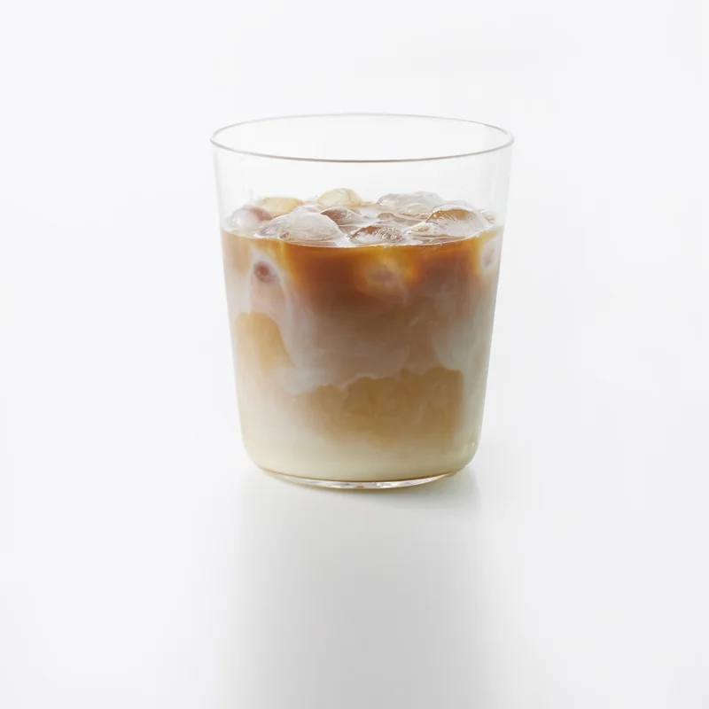
黒糖ソイラテ（HOT / COLD）
¥390 · Set ¥330
Rich soy milk latte sweetened with mineral-rich Japanese kuromitsu brown sugar.
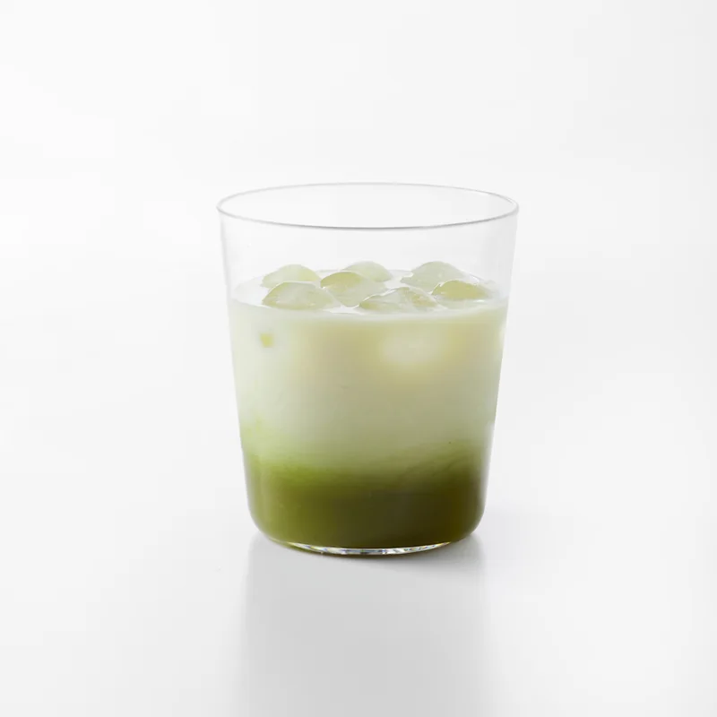
抹茶ソイラテ（HOT / COLD）
¥390 · Set ¥330
Fragrant Japanese green tea whisked with creamy soy milk, hot or iced.
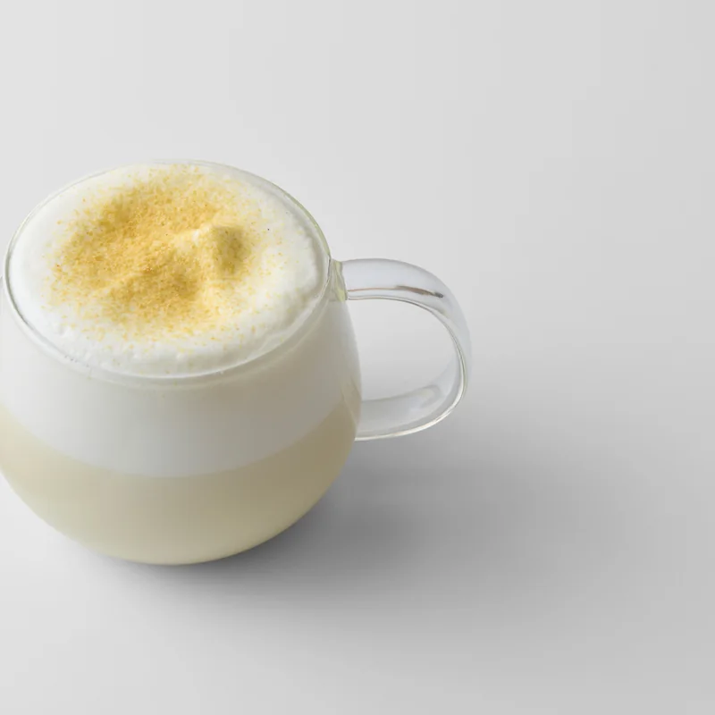
甘酒ラテ
¥390 · Set ¥330
Naturally sweet, non-alcoholic fermented rice koji latte — completely soy-free!
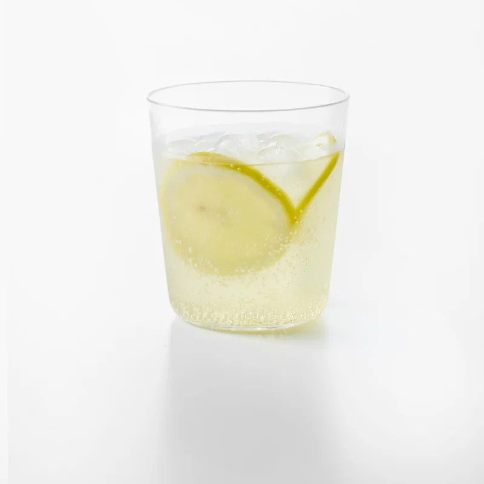
レモンスカッシュ
¥390 · Set ¥330
Bright, zesty sparkling citrus cooler.
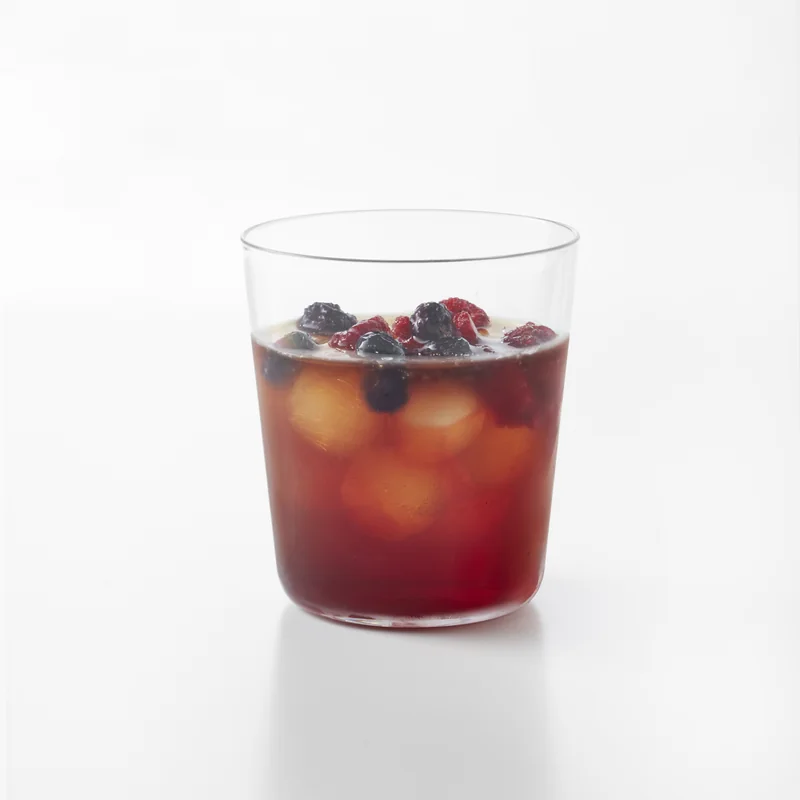
ミックスベリーティー
¥390 · Set ¥330
Refreshing iced tea infused with sweet-tart berries.
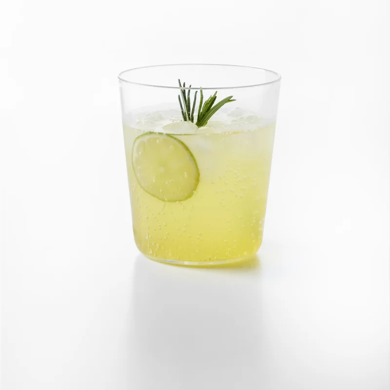
トロピカルソーダ
¥360 · Set ¥330
Fruity sparkling tropical soda with juicy peach notes.
*Disclosed against Japan’s 29 specified allergens standard (9 mandatory + 20 recommended items).
Visit us
Last order 9:45 PM · 2–3 min walk from Yakuin-odori Stn (Exit 2) · 4 main seats + stools & takeout
Show this screen to our staff at the counter
これをください